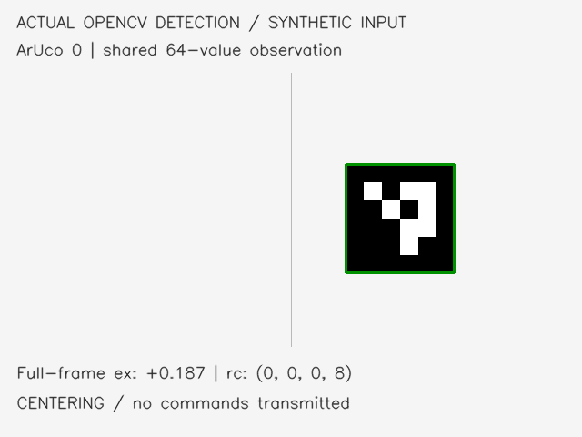

One target.
One control contract.
The team starter and additional bench tools now share the same printed-wall approach pipeline. YOLO remains the main detector; red cards and ArUco markers make the interfaces easy to exercise before the aircraft arrives.
October 29, 2026 · software integration · actual aircraft qualification pending
Different bench inputs.
The same state builder.
Markers are test fixtures for the wall-approach pipeline. They do not replace the printed-object demonstration.

Every adapter produces normalized center/size, class, confidence, frame ID and timestamp. Target confirmation, PID/PPO interfaces and the supervisor consume one versioned contract.
- YOLO11n for the selected object class.
- ArUco/red-card inputs for training-free bench checks.
- Latest-frame capture with explicit receipt timestamps.
- Per-print visual-scale calibration; forward ToF for near approach.
python -m pip install -e '.[test,markers]'
python -m objectpilot.replay --source synthetic \
--detector aruco --seconds 5 \
--out runs/aruco-bench.jsonl

Center, approach, hold.
Explore the proportional part of the team's initial PID mapping and the key stop conditions.
Turn toward the target before moving forward.
Channel order: lateral · forward · vertical · yaw
Here ex = cx / frame width − 0.5. The illustration uses forward = 1.5 × (distance − 0.65) and yaw = 3.5 × ex, scaled to caps 20 and 25. It omits derivative response, action slew, temporal confirmation, the persistent near-range latch and the two-second arrival timer. The Python code implements those temporal checks. RC units are not calibrated physical speed.
Source, checks and clear limits.
The original team results remain attributed to their original run. New checks are recorded separately.
| Area | Integrated work | Remaining qualification |
|---|---|---|
| Code and policy interface | Team source, simulator and training tools committed with the 16 × 4 schema | PID tuning, multiple policy seeds and final held-out comparison |
| Camera input | File/webcam/synthetic replay; ground-only TT video and range queries | Actual aircraft video, Wi-Fi delay and exposure timing |
| Arrival and range | Two-second measured hold; unknown stock sample age cannot authorize approach | Actual sensor freshness, geometry and stopping drift |
| Command supervision | Independent age/heartbeat watchdog scaffold with fake I/O tests | Qualified sink, operator controls and onboard link-loss behavior |
| Data workflow | Collection, reviewed labels, grouped splits, calibration and evaluation tools | Real printed-target dataset and measured detector quality |
python -m pytest -q
python -m objectpilot.evaluate --episodes 30 \
--seed 20000 --out runs/pid-integrationMeasure before flight.
Identify the delivered board, calibrate the camera and range sensor, and qualify command response and operator control.
The public camera commands are ground-only. The dispatcher is an integration scaffold and has not flown a drone. Optional IR ranging does not establish night-flight capability.